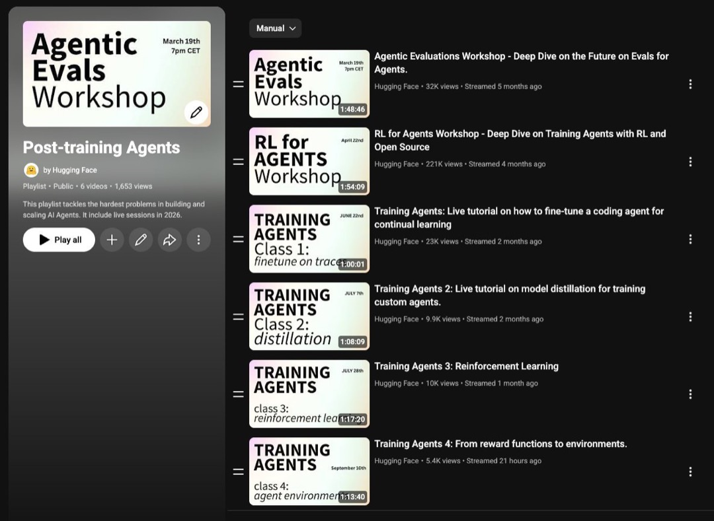
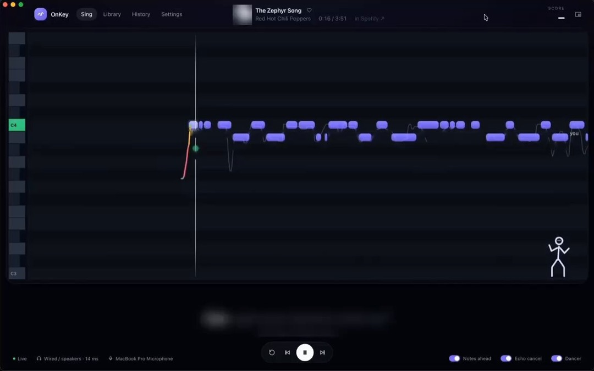
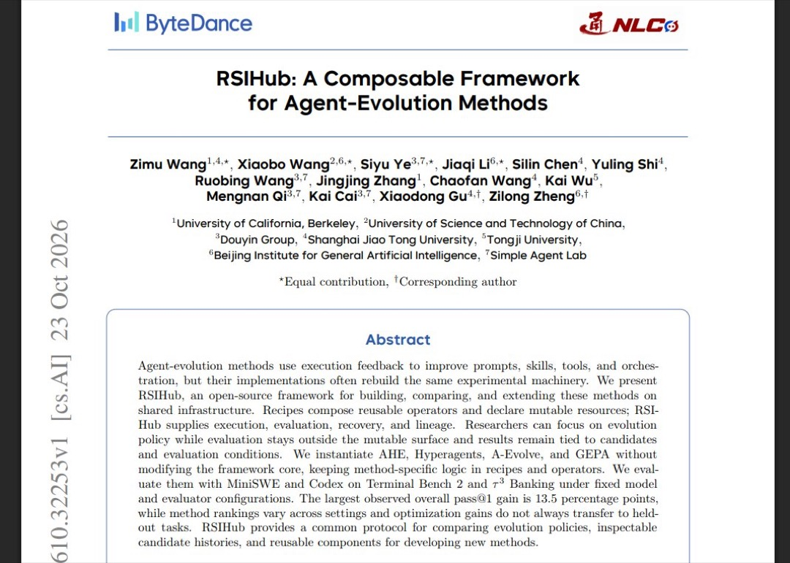
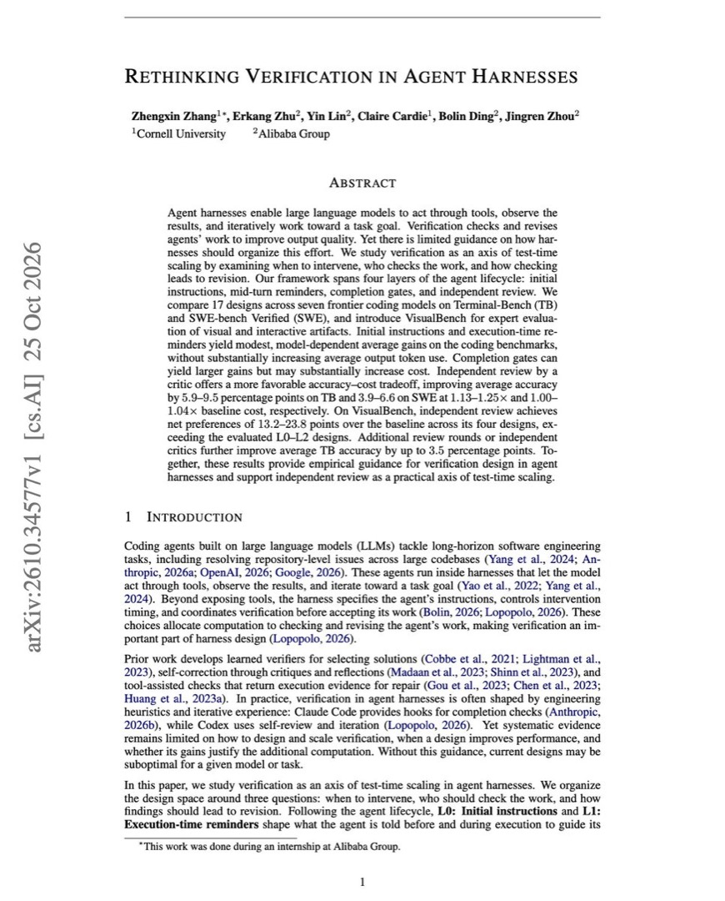
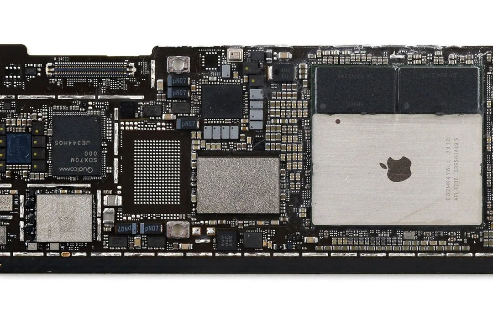
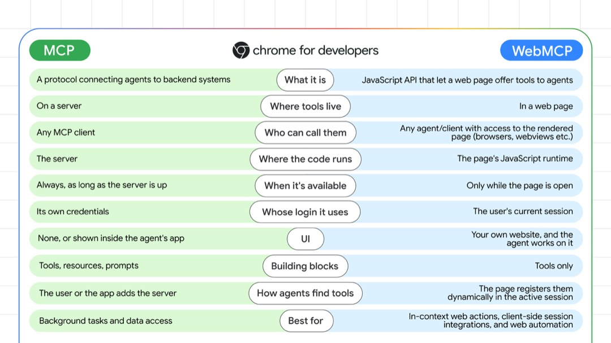
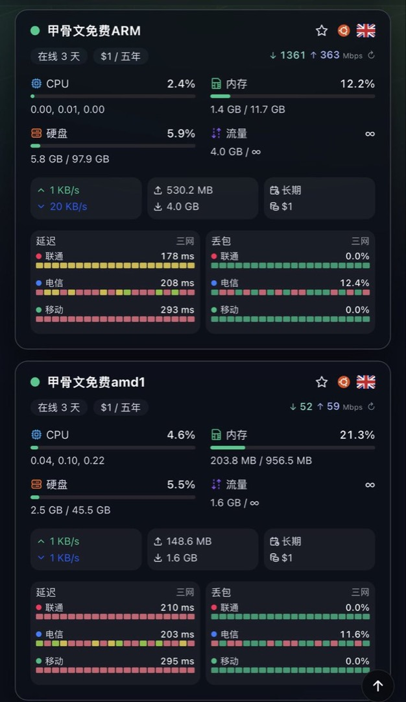

本期速览
01 Uncle Bob发布AI编程技能文件
04 RSIHub统一智能体进化评测框架
05 豆包向酒店收取12%预订佣金
06 审查agent提升编码任务5.9分
09 WebMCP连接Agent与浏览器会话
10 Genie 4世界模型实时生成音频
01｜Uncle Bob发布AI编程技能文件
来源（X） · @longhaiqwe123 · 2026-10-27 19:20
它规定了修改代码的基本顺序：先整理数据结构，写出失败的测试，再修改代码。完成后检查复杂度、重复代码和测试是否有效。
项目配套推荐了三个检查工具：
• Crapper：计算函数复杂度、覆盖率和 CRAP 分数。
• Dryer：查找结构相似的代码。
• Mutator：修改代码中的运算符或常量，检查测试能否发现变化。
另外还有一个 UML Viewer，用来查看代码结构和质量指标。
这些规则可以作为验收清单。但复制技能文件不会自动拦截不合格的代码，工具安装、参数和检查流程仍需配置。
引用内容
Uncle Bob Martin @unclebobmartin
中文译文
我编写了这个技能，用起来效果相当不错。我的 grokbots 在写代码时会使用它。
https://github.com/unclebob/ub-mode
原文
I composed this skill and have had pretty good luck with it. My grokbots use it when writing code.
https://github.com/unclebob/ub-mode
02｜HF公开Agent训练全流程课程
来源（X） · @Kay2289123 · 2026-10-28 00:55
学完了，你应该会有更强的 sense，判断 AI 时代下哪些工作更适合人来做
这个资料是公开的，视频都在 Hugging Face 的 YouTube 频道，代码全部开源，下面有这六节：
1、Agentic Evaluations Workshop：怎么评价一个 Agent。
这一章节去看：为什么 benchmark 分数和真实使用体验对不上？目前 Agent Eval 做到了哪一步，还有哪些问题没解决。先把“怎样才算一个好 Agent”，等等都有 cover
2、RL for Agents Workshop：给 Agent 做强化学习，难在哪
这一章节去关注：从 LLM 的 RL 走到 Agent 的 RL，会多出哪些难点？环境怎么搭、rollout 怎么跑、reward 怎么设计，以及训练过程中推理为什么会成为 bottleneck
3、SFT on agent traces：用 Agent 的执行轨迹做微调
这一章节去关注：拿公开的 coding-agent traces（执行轨迹）整理成训练数据，用 TRL + LoRA 做 SFT，在 Hugging Face Jobs 上跑，用 Trackio 看指标。基本带着走了一遍小型的微调流程
4、Distillation：把大模型的能力蒸馏给小 Agent
这一章节去关注：怎么把 teacher model 的能力转移给更小的 coding agent。off-policy、on-policy、self-distillation 都会讲，看看这几种蒸馏方式分别怎么做
5、Reinforcement Learning：SFT 之后，怎么继续用 RL 训练
这一章节去关注：用 GRPO 接着训练，讲 group sampling、可验证的 reward，以及 reward、KL、输出长度这些曲线怎么看。看 Agent 怎么 reward hacking
6、From reward functions to environments：让 Agent 在真实环境里学习
这一章节去动手：从 reset()/step() 接口讲起，用 OpenEnv 搭环境、上传到 Hub，再接入 TRL 的 GRPOTrainer。最后通过 Harbor 和 Hugging Face sandboxes，用 AsyncGRPOTrainer 训练真正的 coding agent：OpenCode。让 Agent 在环境里采取动作、拿到反馈，再继续训练

03｜OnKey开源Mac本地练歌评分
来源（X） · @GitHub_Daily · 2026-10-27 12:00
OnKey 是一款开源免费的 Mac 练歌软件，在 Spotify、Apple Music 或浏览器的 YouTube 里放歌，跟着唱就行。
第一次放一首歌会先给歌词，歌放完它就把原唱的旋律学下来。
之后再唱，音符会滚动着过来，我们的音高实时画在上面，唱准了就变绿。唱完有打分，每一句都有单独的报告。
GitHub：https://github.com/dsmurrell/onkey
评分不算死板，低八度唱也算对，稍微慢半拍不扣分。学歌全在 Mac 本地完成，先把人声和伴奏分开，再一个音节一个音节转成音符。
它不存、不下载音乐，也没有账号和数据统计。
作者给它写的口号挺逗，叫「把浴室歌手从自己手里救出来」。洗澡时爱哼两句、想正经练练的，装上试试。

04｜RSIHub统一智能体进化评测框架
来源（X） · @snwiki238337 · 2026-10-27 10:50
来自 UC 伯克利、中科大、字节跳动、上海交大、同济大学和北京通用人工智能研究院等机构的联合团队，最新在 arXiv 上开源了首个针对智能体进化的可组合评测与执行框架RSIHub: A Composable Framework for Agent-Evolution Methods。
这篇工作的定位非常像深度强化学习时代的 Gym 或分布式训练时代的 PyTorch Lightning，就是把算法与底层的一些东西进行一下解耦。
RSIHub 把候选智能体的生命周期分为为 7 个阶段：Select 选择父本、Rollout 收集轨迹、Analyze 分析瓶颈、Mutate 触发变异、Guardrail 护栏拦截、Evaluate 受保护评估、Absorb 决策准入。
算法逻辑被写入在了 47 到 61 行的 YAML 声明中。
他们直接在同一个底座上复现了 AHE、Hyperagents、A-Evolve 和 GEPA 四大主流演化算法，核心算法逻辑仅需几百行独立算子代码即可插拔替换。
系统中通过声明，严格划清允许修改什么。智能体可以自由重写自己的 Prompt、Skills、Tools，甚至在 Hyperagents 模式下可以修改算子。
在 7 类故障注入与边界越权压力测试中共 420 组独立实验，无论是尝试向可变目录外写文件、篡改评测代码，还是在变异阶段偷看保留测试集，全部被框架 100% 拦截并安全归档。
而且每次 agent 提交都绑定了确定的环境、配置与执行快照，即使运行到第 7 代时发生服务器断电或 API 超时，框架也能凭借事务断点续跑，并提供只读的可视化面板供开发者逐帧审查每一代代码究竟改了什么。
在统一的基础设施上，作者使用基于 GPT-5.4 驱动的 MiniSWE 与 Codex 的评测底座在 Terminal Bench 2 和真实银行任务上对这四大演化算法进行了实现。
结果在统一环境下，演化算法带来的整体提升最高达 13.5 个百分点。
算法的通用性是较差的。
比如在 Terminal Bench 2 上表现非常不错的 Hyperagents，换到另一个上就失去了统治力，说明不同演化机制在工具调用与知识推理上的适应性有着极强的领域特异性。
此外由于 RSIHub 严格实行了训练集用于提炼变异、门控集用于准入、密封保留集严禁可见的划分。
数据清晰地显示很多算法虽然在训练集上涨 7 到 8 个点，但在完全未见过的 Sealed 任务上反而可能出现 2 到 4 个点的性能倒退。
这其实说明高分很大程度上是因为演化策略无意间对有限的评测题目产生了过拟合。
项目主页：https://simpleagentlab.com/rsihub/](https://simpleagentlab.com/rsihub/
GitHub 开源仓库：https://github.com/simple-agent-lab/RSIHub
arxiv：https://arxiv.org/abs/2610.32253

05｜豆包向酒店收取12%预订佣金
来源（X） · @ChineseWSJ · 2026-10-27 21:01
06｜审查agent提升编码任务5.9分
来源（X） · @dair_ai · 2026-10-27 23:20
中文译文
来自 Alibaba 和 Cornell 的一篇很棒的论文，关于编码 agent 框架中的验证机制。
（建议收藏）
如果你在构建 agent 框架，这篇论文值得你花时间阅读。
他们发现，一个独立的 reviewer agent 可以在 Terminal-Bench 上提升 5.9 到 9.5 个点，成本是基线的 1.13 到 1.25 倍。
他们在 Terminal-Bench 和 SWE-bench Verified 上，用七个前沿编码模型对比了 17 种验证设计。这些设计在四个节点检查 agent 的工作：初始指令、运行过程中的提醒、agent 完成前的一道关卡，以及最后的独立评审。
指令和提醒带来了小幅的、因模型而异的提升。完成关卡带来了更大的提升，但有时成本要高得多。独立评审的性价比最高，在 SWE-bench Verified 上以几乎零额外成本提升了 3.9 到 6.6 个点。更多的评审轮次在 Terminal-Bench 上最多额外增加 3.5 个点。
https://arxiv.org/abs/2610.34577
与论文对话：https://academy.dair.ai/papers/rethinking-verification-in-agent-harnesses-2610.34577
原文
Great paper from Alibaba and Cornell on verification in coding-agent harnesses.
(bookmark it)
If you build agent harnesses, this one is worth your time.
They find that a separate reviewer agent adds 5.9 to 9.5 points on Terminal-Bench at 1.13 to 1.25x the baseline cost.
They compared 17 verification designs across seven frontier coding models on Terminal-Bench and SWE-bench Verified. The designs check the agent's work at four points: the initial instructions, reminders during the run, a gate before the agent can finish, and an independent critic at the end.
Instructions and reminders gave small, model-dependent gains. Completion gates gave larger gains, sometimes at much higher cost. The critic gave the best accuracy per dollar, adding 3.9 to 6.6 points on SWE-bench Verified at almost no extra cost. More review rounds added up to 3.5 more points on Terminal-Bench.
https://arxiv.org/abs/2610.34577
Chat with Paper: https://academy.dair.ai/papers/rethinking-verification-in-agent-harnesses-2610.34577

07｜蒋炎岩开源生成式软件工程课程
来源（X） · @ThirteenYizuka · 2026-10-27 23:38
南京大学蒋炎岩老师的个人博客，记录了自己负责教学的操作系统、计算机组成原理、软件工程的全部课程内容
其中较为著名的是《生成式软件工程》
主要回答了，在AI时代，为什么软件工程仍然不可替代且愈发重要，如何将软件工程思维应用于AI开发应用的全流程，实现软件开发的高效、清晰、稳定、易于维护，而不是产生大量AI slop，当算力部分乃至完全取代智力，我们如何正确驾驭
课程涵盖
欢迎来到未来
提示词与上下文工程
版本管理 (1) | Lab1: 个人数字助手
版本管理 (2)
软件工程的来龙去脉
需求和架构 (1)
需求和架构 (2) | Lab2: Deeper Research
Agent Native 开发
DeepSeek Harness
“欢迎来到未来”
08｜M4 iPad焊12GB内存仅用8GB
来源（X） · @mylifcc · 2026-10-27 23:02
如果你买了 256G 或 512G 的 M4 iPad Pro，我现在告诉你一个可能会让你血压飙升的真相：
你手里的平板，主板上其实焊着足足 12GB 的内存！但苹果硬生生给你锁死了 4GB，只让你用 8GB！
这可不是阴谋论，这是外媒 Tom's Hardware 和拆机大神实锤的硬件铁证！
有人扒出了 M4 iPad Pro 主板上的镁光内存颗粒编号，发现 8GB 版本的机器里，居然塞了两颗 6GB 的内存芯片！2乘6等于12，小学数学题对吧？但你在系统里永远只能看到 8GB！
很多人就不理解了：内存芯片是苹果自己花真金白银买的，既然都焊上去了，做个顺水人情给用户 12GB 不香吗？
Too young！这就是库克最恐怖的算计：
第一，市面上没有符合 M4 满血带宽的单颗 4GB 内存，去定制比直接买两颗 6GB 还要贵；
第二，也是最扎心的——如果入门版给你开放了 12GB，谁还愿意多花四五千块钱去买 1TB 的 16GB 顶配版？
宁可自己掏钱买 12G 的硬件，再亲手废掉三分之一，也绝不能让普通用户占到一点便宜！这已经不是“精准刀法”了，这是“宁可毁掉也不给你”的物理防越级！
以前我们吐槽苹果“把 8G 内存当黄金卖”，现在才知道，原来黄金早就在你机身里了，只是苹果上了把锁，钥匙扔进了太平洋。

09｜WebMCP连接Agent与浏览器会话
来源（X） · @realfxw · 2026-10-27 16:20
先理清楚两者的边界：
MCP（服务端）：解决的是 Agent 直连你云端服务、调后端 API、查数据库的事情。
WebMCP（端侧/前端）：解决的是网页正开着、用户坐跟前盯着屏幕时，Agent 怎么以合法的 Client-side API 介入当前会话。
做过浏览器 Agent 的人懂的都懂，过去大家走的路有多痛苦：要么靠视觉模型截全屏算坐标去点，慢得像幻灯片，跑一次几美分，稍微弹个浮窗就抓瞎；要么写一堆脚本去抓 DOM，页面样式一换立马报错。
WebMCP 解决的核心痛点非常犀利：
解决“非持久化状态”断层用户在网页里输入了一半还没提交的表单、富文本编辑器的未存草稿、前端本地筛选的临时缓存，这些东西后端的 MCP API 根本拿不到。WebMCP 是直接挂在浏览器上下文里的，网页激活时动态注册工具，抓取这些现场数据毫无阻力。
天然借用用户 Session，安全合规直接降维不需要把自己的账号 Cookie、密码或高权限 API Key 掏出来扔给云端 Agent。网页本身就是用户合法登录的环境，Agent 调用的每一个动作都在浏览器沙箱和当前权限范围内，甚至可以直接在 UI 层面让用户二次确认（Human-in-the-loop）。这对企业安全团队来说，接受度比让后端裸奔高太多了。
以后的分工大概率是：
后台离线跑批、系统间数据打通：老老实实走服务端 MCP；
前台伴随式协作、辅助填表、界面即时操作：前端直接暴露 WebMCP 工具契约；
至于视线对齐去抓屏点击的 Computer Use？那是网站彻底不给 API 时的下策兜底。
前端开发们可能又得吐槽多了一套新标准要写，但把粗暴的爬虫换成结构化的客户端 API，绝对是 Web 走向真正 Agent-Ready 的必经之路。
#WebMCP #MCP #AIAgent #BrowserUse #ChromeDevs #WebDev #前端开发
引用内容
Chrome for Developers @ChromiumDev
中文译文
不，WebMCP 不是要取代 MCP。
MCP 将 agent 连接到你的服务。
WebMCP 在你的网站处于打开状态、且用户参与流程中时，将 agent 连接到你的网站。
以下是它们如何协同工作 ⤵️
原文
No, WebMCP isn't replacing MCP.
MCP connects agents to your services.
WebMCP connects agents to your website while it's open and the user's in the loop.
Here's how they fit together ⤵️

10｜Genie 4世界模型实时生成音频
来源（X） · @op7418 · 2026-10-28 01:09
谷歌发布 Genie 4 世界模型。
这次可以实时生成周围原声的音频，而且感觉画质和物理效果有了大幅提升，同时终于实装了在生成过程中通过提示词生成事件的能力。
这演示效果太好了，希望 Ultra 会员早日能体验上，现在还不行。
11｜甲骨文免费VPS月送10TB流量
来源（X） · @0xjackkk · 2026-10-27 22:35
先说配置。
2 核 12G 内存、最高 200G 免费块存储额度。
重点是：永久免费层 Always Free，不是那种用完几个月就让你掏钱的试用机。
再说 IP。
公网 IP 不额外收费，遇到 IP 不可用的情况，还可以按规则尝试释放、重新分配。
最后才是最离谱的。
每月最高 10TB 免费出站流量。
有些年付几十刀的小鸡，流量都不一定有它多。
所以有时候不是付费 VPS 不够好，而是免费甲骨文给得太多了。
之前没申请出来不知道，现在觉得真香
还没龟壳毕业的要加油了
#OracleCloud #OCI #免费VPS #VPS #甲骨文
